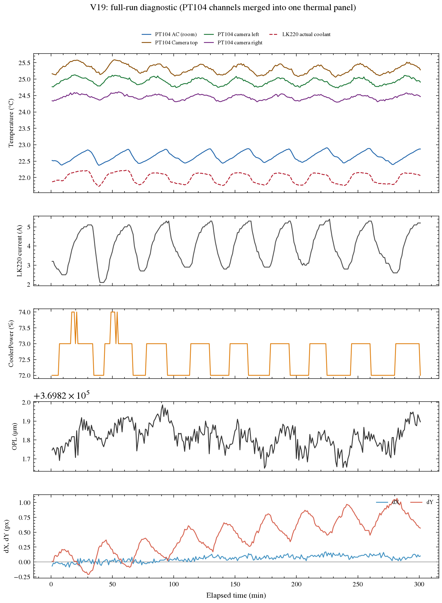

Passive monitor
Where does the repeating structure appear?
A common ~33.4 min component
Across a five-hour passive run, a repeating component appeared in room/AC, LK220, camera, OPL and dY channels. With few cycles, it is a diagnostic signature rather than a unique transfer function.
- Measured
- dY RMS 0.5365 px · OPL p-p 0.335 µm
- What changed next
- Test the camera TEC as a heat-load intervention.

V19 Fig. V19.1 · full-run diagnostic from the archived V19–V21 report.